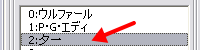
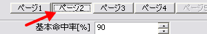
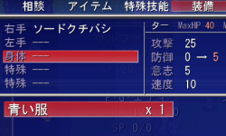

可変データベース
右のようなウィンドウが表示されます。

【目標】
夕一（にわとり）を、服装備可能にします。
| 【1】 可変データベース 右のようなウィンドウが表示されます。 |
|
| 【2】 「タイプ」が「主人公ステータス」に なっていることを確認してください。 （もしなっていなければ、 「0:主人公ステータス」をクリック） |
 |
| 【3】 「夕一」をクリックして下さい |
 |
| 【4】 「ページ２」をクリックして下さい |
 |
| 【5】 装備可能タイプという 項目があります。 この項目は、「爪・くちばし」しか 選択されていませんが ここに「服」を追加して下さい。 |
|
【6】
更新ボタンかＯＫボタンを押して下さい。
これで「服」が装備可能になりました。
| 【余談】テストプレイ 夕一に「青い服」を装備させます。 無事装備させることが出来ました。 |
 |
＜執筆者：さくらば結城＞